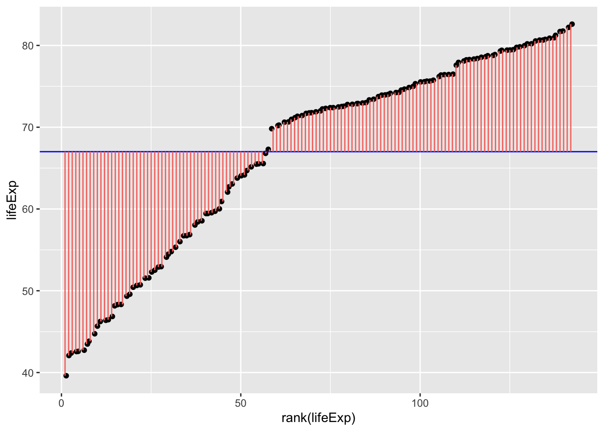

library(gapminder)
# create a new data frame that only focuses on data from 2007
gapminder_2007 <- subset(
gapminder, # the data set
year == 2007
)
mean(gapminder_2007$lifeExp)[1] 67.00742General linear models allow you to analyse data in which the dependent variable is continuous. For example, if you are analysing the height of a group of individuals, you might use one of the following analyses:
t-test, comparisons between two conditions e.g. are males taller than females?
regression, one or more predictors of a single outcome e.g. does foot size, weight etc. predict height? (Note that correlations are equivalent to a regression with a single predictor)
ANOVA, comparisons between 3 or more conditions or between multiple categorical factors, e.g. are there differences in height between sexes and nationalities?
Linear refers to the dependent variable being continuous.
General refers to the fact that the independent variables can both be continuous (e.g. regression) or categorical (e.g. t-test or ANOVA).
In general linear models all analyses involve creating a model, and capturing what is and isn’t explained by the model (i.e. the error of the model). All analyses in general linear models can be formulated as:
\[ Data = Model + Error \]
Data: The dependent variable in your analysis Model: A model which predicts a phenomenon. This could be multiple independent variables. Error: What data isn’t explained by the model.
If you want to estimate what someone’s life expectancy would be in 2007, you could look at the mean life expectancy using the gapminder data. In terms of how this corresponds to the above model:
\[ Data = Model + Error \]
\[ estimatedLifeExpectancy = mean(lifeExpectancy) + Error \]
library(gapminder)
# create a new data frame that only focuses on data from 2007
gapminder_2007 <- subset(
gapminder, # the data set
year == 2007
)
mean(gapminder_2007$lifeExp)[1] 67.00742\[ estimatedLifeExpectancy = 67.01 + Error \]
Which could be visualised as:
library(ggplot2)
ggplot(
gapminder_2007, aes(x=rank(lifeExp), y=lifeExp)
) +
geom_jitter() +
geom_hline(yintercept = mean(gapminder_2007$lifeExp), color="blue") +
geom_segment(
aes(
xend = rank(lifeExp),
yend = mean(lifeExp),
color = "resid"
)
) +
theme(legend.position = "none")
Fig. 1.
In English, the above model and figure allow you to predict that anyone’s life expectancy will be 67 years. However, as you can also see, there’s a huge amount of error, i.e. variance in life expectancy that is not explained by the model. These errors can be squared and summed to give the sum of squares, a statistic of how much error there is around the model:
\[ SS = \sum(Y_i-\bar{Y})^2 \]
Which can be visualised as follows:
ggplot(
gapminder_2007,
aes(
x=rank(lifeExp),
# y is the square of the difference between each data point and the mean across all data poins. Once these are summed you will get the sum of squares.
y=(lifeExp-mean(lifeExp))^2
)
) +
geom_point() +
geom_segment(
aes(
xend = rank(lifeExp),
yend = 0,
color = "resid"
)
) +
theme(legend.position = "none")
Fig. 2.
You can directly compare fig. 1. and fig. 2. to see how much error is associated with each data point compared to the model. Fig. 2. is positive because it is the distance of the data-point from the mean squared. If you added together all the squares (pink lines) in fig. 2. that would give you the sum of squares.
As you may have guessed, it is possible to have more precise models that have less error, and thus a smaller sum of squares. The sum of squares around the mean is also the total sum of squares, and the total variance. When we calculate the proportion of the variance that a model explains, we are comparing it to this variance around the mean.
Let’s explore those possibilities now.
T-tests are restricted to comparisons between 2 conditions/groups, so we will restrict the Gapminder data to allow a comparison between 2 continents. To see if life expectancy was different if you are born in Europe compared to the Americas, let’s first check what the sum of squares is when you just use the mean as the model of life expectancy across these contents:
gapminder_americas_europe <- subset(
gapminder_2007, # the data set
continent == "Europe" | continent == "Americas"
)
ggplot(
gapminder_americas_europe, aes(x=rank(lifeExp), y=lifeExp)
) +
geom_point() +
geom_hline(yintercept = mean(gapminder_americas_europe$lifeExp), color="blue") +
geom_segment(
aes(
xend = rank(lifeExp),
yend = mean(lifeExp),
color = "resid"
)
) +
theme(legend.position = "none")Fig. 3. The errors around the mean of life expectancy across Europe and American countries.
Once we square the errors in the pink lines above, we’ll get the squares:
ggplot(
gapminder_americas_europe,
aes(
x=rank(lifeExp),
# y is the square of the difference between each data point and the mean across all data poins. Once these are summed you will get the sum of squares.
y=(lifeExp-mean(lifeExp))^2
)
) +
geom_point() +
geom_segment(
aes(
xend = rank(lifeExp),
yend = 0,
color = "resid"
)
) +
theme(legend.position = "none")
sum((gapminder_americas_europe$lifeExp - mean(gapminder_americas_europe$lifeExp))^2)[1] 953.4478And when you add all of these together:
\[ SumOfSquares = \sum(Y_i-\bar{Y})^2 = 953.4478 \]
So if the model we create for a t-test would result in a smaller sum of squares then that suggests it’s a more precise model for estimating life expectancy than simply using the mean as a model. This is because this would mean there’s less error in this model. Let’s model this using a t-test. For this we will need to dummy code country:
# create a column to place 1 or -1 for each row dependent on the country
contDummy = NA
contDummy[gapminder_americas_europe$continent == "Europe"] = 1
contDummy[gapminder_americas_europe$continent == "Americas"] = -1
gapminder_americas_europe = cbind(contDummy,gapminder_americas_europe)
rmarkdown::paged_table(head(gapminder_americas_europe))Now that we have dummy coded the continent, we can create a new model to try to predict an individual’s life expectancy based on which continent they are from
\[ Y = intercept + \beta * dummyVariable + Error \]
\[ lifeExp = mean(lifeExp) + \beta * ContDummy + Error \]
Y being the predicted life expectancy.
\(\bar{Y}\) being the mean life expectancy regardless of continent. For a t-test this is also the \(intercept\).
\(\beta\) being how much to adjust the prediction based on which continent the person is from
\(ContDummy\) being 1 (Europe) or -1 (Americas) to reflect which continent the participant is from
\(Error\) being any error in the prediction not captured by the model
To get the \(intercept\) and \(\beta\) for the above formula let’s use the lm function in R:
continent_ttest <- lm(lifeExp ~ contDummy, gapminder_americas_europe)
continent_ttest$coefficients[1] (Intercept)
75.62836 continent_ttest$coefficients[2]contDummy
2.02024 gapminder_americas_europe$t_fit = continent_ttest$coefficients[1] + # intercept
continent_ttest$coefficients[2] * # gradient
gapminder_americas_europe$contDummy
ggplot(gapminder_americas_europe, aes(x = contDummy, y = lifeExp)) +
geom_segment(
position = "jitter",
#arrow = arrow(length = unit(0.01, "npc"),ends = "first"),
aes(
xend = contDummy,
yend = t_fit,
color = "resid"
)
) +
geom_segment(aes(
x = -1.9,
xend = -.1,
y = -1 * continent_ttest$coefficients[2] + continent_ttest$coefficients[1],
yend = -1 * continent_ttest$coefficients[2] + continent_ttest$coefficients[1]),
color = "blue"
) +
geom_segment(aes(
x = 0.1,
xend = 1.9,
y = 1 * continent_ttest$coefficients[2] + continent_ttest$coefficients[1],
yend = 1 * continent_ttest$coefficients[2] + continent_ttest$coefficients[1]),
color = "blue"
)
Fig. X. Countries in the americas are dummy coded as -1 and countries in Europe are dummy coded as 1. Note that jittering has been used to help visualise variation within continents, and so all countries in Americas had a \(contDummy\) score of -1, even if the jittering above makes it look like participants from Europe had slightly different \(contDummy\) values to each other.
So now that we’ve visualised the predictions and the error, lets summarise these errors with their sum of squares:
# to get the sum of squares, you can use the lm from earlier
sum(continent_ttest$residuals^2)[1] 730.8276# to calculate this manually:
gapminder_americas_europe$t_res = gapminder_americas_europe$t_fit - gapminder_americas_europe$lifeExp
gapminder_americas_europe$t_res_squared = gapminder_americas_europe$t_res^2
sum(gapminder_americas_europe$t_res_squared)[1] 730.8276So the new sum of squares is 730.8276, which is smaller than it was when we just used the mean regardless of continent (953.4478) which also summarises the total variance (around the mean). In fact, we can use these 2 numbers to calculate the \(r^2\) value (i.e. what proportion of the variance around the mean is explained by the model). The amount of variance explained by the model can be calculated by:
\[ totalSumOfSquares - modelSumOfSquares = totalError - modelError \]
This allows us to calculate an r-value and thus a p-value:
this_r2 = 1 - sum(gapminder_americas_europe$t_res_squared)/sum((gapminder_americas_europe$lifeExp - mean(gapminder_americas_europe$lifeExp))^2)
this_r = sqrt(this_r2)
this_r[1] 0.4832076t.test(
gapminder_americas_europe$lifeExp[gapminder_americas_europe$contDummy == 1],
gapminder_americas_europe$lifeExp[gapminder_americas_europe$contDummy == -1],
var.equal = T
)
Two Sample t-test
data: gapminder_americas_europe$lifeExp[gapminder_americas_europe$contDummy == 1] and gapminder_americas_europe$lifeExp[gapminder_americas_europe$contDummy == -1]
t = 4.018, df = 53, p-value = 0.0001864
alternative hypothesis: true difference in means is not equal to 0
95 percent confidence interval:
2.023525 6.057435
sample estimates:
mean of x mean of y
77.64860 73.60812 summary(lm(lifeExp ~ contDummy, gapminder_americas_europe))
Call:
lm(formula = lifeExp ~ contDummy, data = gapminder_americas_europe)
Residuals:
Min 1Q Median 3Q Max
-12.6921 -2.1364 0.4494 2.5671 7.0449
Coefficients:
Estimate Std. Error t value Pr(>|t|)
(Intercept) 75.6284 0.5028 150.416 < 2e-16 ***
contDummy 2.0202 0.5028 4.018 0.000186 ***
---
Signif. codes: 0 '***' 0.001 '**' 0.01 '*' 0.05 '.' 0.1 ' ' 1
Residual standard error: 3.713 on 53 degrees of freedom
Multiple R-squared: 0.2335, Adjusted R-squared: 0.219
F-statistic: 16.14 on 1 and 53 DF, p-value: 0.0001864this_r2[1] 0.2334896You may notice above that the manually calculated \(r^2\) value is identical to the “Multiple R-Squared”, rather than the “Adjusted R-squared”. So what’s the difference between r-squared and adjusted r-squared?
When completing a regression, there’s always a risk of “overfitting” the data, i.e. creating a model that includes predictors that have no meaningful association with the outcome variable. For example, let’s generate some random data, and see what R-values etc. we get:
random_df = data.frame(
random_iv_1 = runif(100),
random_iv_2 = runif(100),
random_iv_3 = runif(100),
random_dv = runif(100)
)
rmarkdown::paged_table(random_df)random_summary <- summary(lm(random_dv ~ random_iv_1, random_df))
random_summary
Call:
lm(formula = random_dv ~ random_iv_1, data = random_df)
Residuals:
Min 1Q Median 3Q Max
-0.47728 -0.23245 -0.02832 0.25692 0.49977
Coefficients:
Estimate Std. Error t value Pr(>|t|)
(Intercept) 0.43728 0.06107 7.160 1.5e-10 ***
random_iv_1 0.10274 0.10608 0.968 0.335
---
Signif. codes: 0 '***' 0.001 '**' 0.01 '*' 0.05 '.' 0.1 ' ' 1
Residual standard error: 0.2862 on 98 degrees of freedom
Multiple R-squared: 0.00948, Adjusted R-squared: -0.0006272
F-statistic: 0.938 on 1 and 98 DF, p-value: 0.3352Looking at the output above, we can see that 0.948% of the variance of random_dv was explained by random_iv_1 before correction. Considering that these were randomly generated numbers, that’s 0.948% too much. However, the Adjusted R-squared is only -6^{-4}. Note that Adjusted R-squared can be a negative number (we’ll discuss the maths in a moment), but this just suggests that based on the sample, the predictors have no association with the outcome variable in the population.
To show that we’ve achieved the same as a t-test, let’s run a between subjects t-test that assumes the variance is equal between the groups (which is an assumption of a general linear model), and see if the p-values are the same:
#953.4478/730.8276
continent_ttest <- t.test(
gapminder_americas_europe$lifeExp[gapminder_americas_europe$contDummy == -1],
gapminder_americas_europe$lifeExp[gapminder_americas_europe$contDummy == 1],
# general linear models assume the variance between conditions is equal
var.equal = T
)
continent_model <- summary(lm(lifeExp ~ contDummy, gapminder_americas_europe))
continent_ttest$p.value[1] 0.0001863749continent_model$coefficients[2,4] # p-value for the continent as a predictor[1] 0.0001863749There are some advantages of conducting a t-test using the “lm” functionality:
You can capture residuals
You have more flexibility to make more complex models
Let’s now see how we can proceed if we have a more complex design, i.e. 3 or more levels and/or more than 1 factor, using ANOVAs.
# manual calculation of F
# between subject
# sum of squares between:
#top_half <- sum(continent_model$residuals^2)/1
bottom_half <- sum((gapminder_americas_europe$lifeExp - mean(gapminder_americas_europe$lifeExp))^2)/(2 * (length(gapminder_americas_europe$lifeExp)-1))
mean(gapminder_americas_europe$lifeExp[gapminder_americas_europe$continent == "Europe"])[1] 77.6486mean(gapminder_americas_europe$lifeExp[gapminder_americas_europe$continent == "Americas"])[1] 73.60812mean(gapminder_americas_europe$lifeExp)[1] 75.81202top_half = length(gapminder_americas_europe$lifeExp) * sum(
(
mean(gapminder_americas_europe$lifeExp[gapminder_americas_europe$continent == "Europe"]) -
mean(gapminder_americas_europe$lifeExp)
) ^2
)
top_half/bottom_half[1] 21.01407car::Anova(lm(lifeExp ~ continent , gapminder_americas_europe), type = "III")Anova Table (Type III tests)
Response: lifeExp
Sum Sq Df F value Pr(>F)
(Intercept) 135454 1 9823.186 < 2.2e-16 ***
continent 223 1 16.145 0.0001864 ***
Residuals 731 53
---
Signif. codes: 0 '***' 0.001 '**' 0.01 '*' 0.05 '.' 0.1 ' ' 1continent_ttest$statistic^2 t
16.14453 SSBetween: 185.5168
SSwithin: 953.4478
anova_df <- gapminder_americas_europe
anova_df$sq_bt <- NA
anova_df$sq_bt[anova_df$contDummy == -1]<- (mean(anova_df$lifeExp) - mean(anova_df$lifeExp[anova_df$contDummy == -1]))^2
anova_df$sq_bt[anova_df$contDummy == 1]<- (mean(anova_df$lifeExp) - mean(anova_df$lifeExp[anova_df$contDummy == 1]))^2
bottom_half <- sum((gapminder_americas_europe$lifeExp - mean(gapminder_americas_europe$lifeExp))^2)/(2 * (length(gapminder_americas_europe$lifeExp)-1))
betweenSS <- sum(anova_df$sq_bt)
totalVar <- sum((gapminder_americas_europe$lifeExp - mean(gapminder_americas_europe$lifeExp))^2)
withinSS <- totalVar - sum(anova_df$sq_bt)
betweenSS/(withinSS/(2 * (length(gapminder_americas_europe$lifeExp)-1)))[1] 32.89829length(gapminder_americas_europe$lifeExp) * sum(anova_df$sq_bt)/bottom_half[1] 1386.92816.145ANOVAs are useful to compare between categorical conditions if you have more than 2 conditions you want to compare or if you have multiple categorical predictor factors you want to investigate. Let’s start with an example of a 2 x 2 design, in which continent and whether the population is “large” or “small” are categorical predictors of life expectancy. First, we need to make a new categorical variable, in which countries with a population greater than medium have a “large” population, and other countries have a “small” population:
gapminder_americas_europe$popCategorical = "small"
gapminder_americas_europe$popDummy = -1
gapminder_americas_europe$popCategorical[gapminder_americas_europe$pop > median(gapminder_americas_europe$pop)] = "large"
gapminder_americas_europe$popDummy[gapminder_americas_europe$pop > median(gapminder_americas_europe$pop)] = 1
anova_df <- gapminder_americas_europe[ ,c(
"popCategorical",
"popDummy",
"continent",
"contDummy",
"lifeExp"
)]
rmarkdown::paged_table(head(anova_df))We can now analyse this using a similar general linear model as the t-test above, but now have a second factor of \(popDummy\) to try to make a more specific model.
glm_anova_model <- summary(lm(lifeExp ~ popDummy * contDummy, data = anova_df))
glm_anova_model
Call:
lm(formula = lifeExp ~ popDummy * contDummy, data = anova_df)
Residuals:
Min 1Q Median 3Q Max
-11.1815 -2.3171 0.4615 2.6663 6.6845
Coefficients:
Estimate Std. Error t value Pr(>|t|)
(Intercept) 75.6598 0.4901 154.383 < 2e-16 ***
popDummy 0.6759 0.4901 1.379 0.17388
contDummy 1.9888 0.4901 4.058 0.00017 ***
popDummy:contDummy -0.8977 0.4901 -1.832 0.07282 .
---
Signif. codes: 0 '***' 0.001 '**' 0.01 '*' 0.05 '.' 0.1 ' ' 1
Residual standard error: 3.618 on 51 degrees of freedom
Multiple R-squared: 0.2999, Adjusted R-squared: 0.2587
F-statistic: 7.281 on 3 and 51 DF, p-value: 0.0003721Let’s see if this model has less error (i.e. a smaller sum of squares than the t-test; 730.8276):
sum(glm_anova_model$residuals^2)[1] 667.5443Yep, so this model is giving us a bit more insight as there is less error. Let’s visualise how much error there is:
glm_anova_model$coefficients[1,1][1] 75.65983glm_anova_model$coefficients[2][1] 0.6758679# gapminder_americas_europe$t_fit = continent_ttest$coefficients[1] + # intercept
# continent_ttest$coefficients[2] * # gradient
# gapminder_americas_europe$contDummy
#
#
# ggplot(gapminder_americas_europe, aes(x = contDummy, y = lifeExp)) +
# geom_segment(
# position = "jitter",
# arrow = arrow(length = unit(0.01, "npc"),ends = "first"),
# aes(
# xend = contDummy,
# yend = t_fit,
# color = "resid"
# )
# ) +
# geom_segment(aes(
# x = -1.9,
# xend = -.1,
# y = -1 * continent_ttest$coefficients[2] + continent_ttest$coefficients[1],
# yend = -1 * continent_ttest$coefficients[2] + continent_ttest$coefficients[1]),
# color = "blue"
# ) +
# geom_segment(aes(
# x = 0.1,
# xend = 1.9,
# y = 1 * continent_ttest$coefficients[2] + continent_ttest$coefficients[1],
# yend = 1 * continent_ttest$coefficients[2] + continent_ttest$coefficients[1]),
# color = "blue"
# )Let’s compare the output of this lm function to an ANOVA function in R to confirm that these are the same thing (i.e. that ANOVA is a general linear model):
# car::Anova(aov(lifeExp ~ popCategorical + continent + popCategorical:continent, data = anova_df), type = "3")
# temp_model <- lm(lifeExp ~ popCategorical + continent + popCategorical:continent, data = anova_df)
# summary(temp_model)
# car::Anova(lm(lifeExp ~ popCategorical + continent + popCategorical:continent, data = anova_df), type = "3")You’ll see that the 2 x 2 interaction p-values are identical between analyses, but that the individual factors are similar but not identical.
Now lets see how this looks for the above analyses:
As described in more detail in the simple regression section, the simplest general linear model could be formulated as:
\[ Y = a + bX + e \]